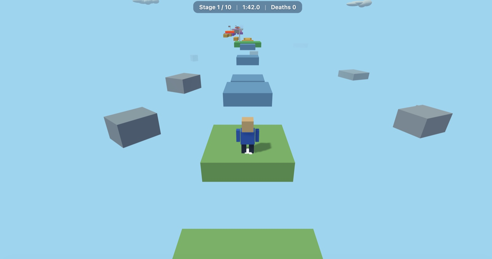

7 October 2026 · Agentic game · third-person platform course
Obby 3D
Completed the ten-stage Obby 3D game. Pi's final session summary reports a valid route, successful desktop/touch smoke checks and three full headless bot completions.

What was checked
- Pi's final session summary reports `node src/validate.js` as ROUTE VALID.
- Pi's final session summary reports `node test/smoke.mjs` as SMOKE OK, exercising WebGL, keyboard input and simultaneous touch input.
- Pi's final session summary reports `node test/complete.mjs` as passed. The bot completed all ten stages and activated all five checkpoints in three trials: 12 deaths / 210 s, 8 deaths / 210 s, and 5 deaths / 243 s.
- The optimized completion capture shows OBBY COMPLETE, 4:03.4 game time and 5 deaths, matching the third trial.
Limits of this evidence
Pi records thinking level medium and provider model ID Qwen3.8-Flash-Next-Sushi-2.6bpw. The matching Sushi 1.2.0 startup identifies the weights as EXL3 K=2.625 with MCG codebook, window 15, and MLX 0.32.3. The process was configured for a 131,072-token context (model context length 1,048,576), KV8, MTP depth 1–6 with MTP-head KV quantization, 512-token prefill chunks, a 16,384-token output limit, temperature 0, one prefix-cache entry, a 20 GB SSD prefix cache, and memory preflight skipped. No --prefix-cache-mem flag was present. The log confirms SSD restores for all 111 matched requests and a final cache usage snapshot of 18.60 / 20.0 GB across 11 entries. The clean-session cache share is 95.92% by prompt tokens, measured as SSD-restored tokens / total prompt tokens; this is not a cold-prefill result. Sushi did not record TTFT or peak memory. The operating-system build and power mode remain unverified. The earlier RAM-pressure-failed Pi session is excluded.
Configuration
The model, serving engine and agent used for this execution.
| Field | Value | Detail |
|---|---|---|
| Model · primary | Qwen 3.8 Flash Next · primary · reasoning medium | EXL3 2.625 bpw (K=2.625; MCG codebook, window 15), confirmed by Sushi 1.2.0 startup log |
| Runtime | Sushi 1.2.0 | inference engine and exact build |
| Harness | Pi coding agent | the agent or client that drove the run |
| Hardware | Apple MacBook Pro with M5 Pro and 64 GB unified memory · 64 GB unified memory | hardware recorded for this execution |
| Workload | Obby 3D · revision 1 | One clean Pi coding-task session. An earlier RAM-pressure-failed session was discarded before this clean restart and is excluded. The three headless game-bot completions are validation trials, not repeated coding-task runs. |
| Repetitions | 1 | executions recorded for this workload; one means an indicative result, not an estimate |
Inference measurements
Engine-side rates for this run. Each figure states its own statistic; figures from different runs are not interchangeable.
| Metric | Value | Definition |
|---|---|---|
| Decode · per-request median | 43 tok/s | median of per-request Sushi decode rates · n=111 |
| Decode · output-weighted | 37.48 tok/s | total output tokens / summed per-request decode time · n=111 |
| Prefill · median | 431.9 tok/s | median; includes cache reuse · n=111 |
| Prefill · mean | 417.67 tok/s | mean; includes cache reuse · n=111 |
| MTP rounds | 40,542 rounds | MTP attempts summed across matched requests · n=111 |
| MTP acceptance | 65.42 % | accepted draft tokens / drafted tokens · n=93261 · 61,014 accepted out of 93,261 drafted tokens. |
| Cache hit ratio | 95.92 % | aggregate SSD-restored prompt tokens / total prompt tokens · n=1 · 6,981,308 of 7,278,273 prompt tokens were restored from SSD across 111 matched requests. |
Agent session counters
Agent-wide usage totals. These include reasoning, tool calls and waiting, and are not model decode speed.
| Metric | Value | Definition |
|---|---|---|
| Model responses | 111 responses | successful assistant model responses in the clean Pi session · n=1 |
| Session elapsed | 241.1 min | clean Pi session start to final response · n=1 |
| Model request errors | 0 errors | assistant requests ending with an error in the clean Pi session · n=1 |
| Tool calls | 111 calls | tool calls in the clean Pi session · n=1 |
| Context compactions | 2 compactions | context compactions in the clean Pi session · n=1 |
| Matched model requests | 111 requests | exact in-order match on prompt, output, and SSD-restored token counts · n=1 |
Context and token counters
Token totals as reported by the harness or engine. Cached and cumulative figures are not additive with fresh input.
| Metric | Value | Definition |
|---|---|---|
| Fresh input | 296,965 tokens | sum of Pi input counters across successful responses in the clean session · n=1 |
| Cached input | 6,981,308 tokens | sum of Pi cache-read counters across successful responses in the clean session · n=1 |
| Pi cached-input share | 95.92 % | Pi cacheRead / (input + cacheRead), derived over 111 successful responses; not an engine cache-hit rate · n=111 · Pi reported 6,981,308 cache-read tokens and 296,965 fresh input tokens. |
| Output tokens | 185,405 tokens | sum of Pi output counters across successful responses in the clean session · n=1 |
| Maximum prompt context | 114,370 tokens | maximum Pi input plus cache-read tokens in one assistant request · n=1 |
Request records & provenance
111/111 successful assistant responses in the clean Pi session matched Sushi summaries in order by exact prompt-token total, output-token count, and SSD-restored token count. The full ordered sequence occurs once in the server log. Every matched request has MTP statistics and an SSD restore record. Two unmatched engine summaries between matched requests are excluded. Records include numeric counts and rates only; raw prompts, responses, timestamps, local paths, and server-log line numbers are omitted. Sushi did not record TTFT.
Run ID: 2026-10-07-qwen38-flash-next-sushi-v120-obby-3d
One execution, with checks transcribed from the retained record. A completed session is not a quality score. Measurement method · All runs